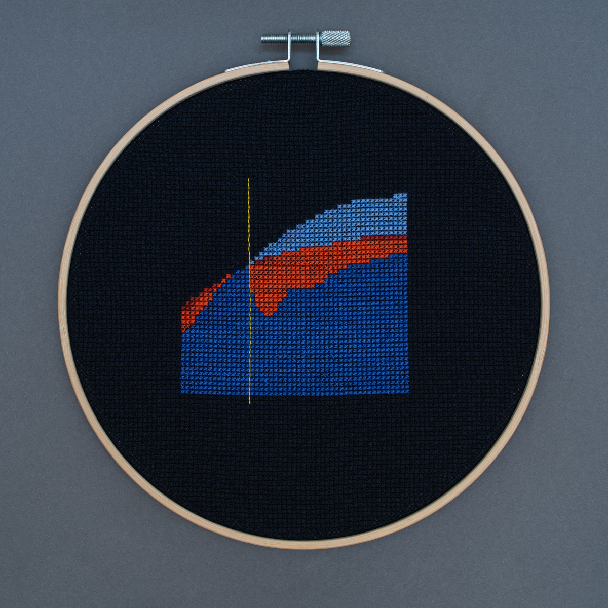
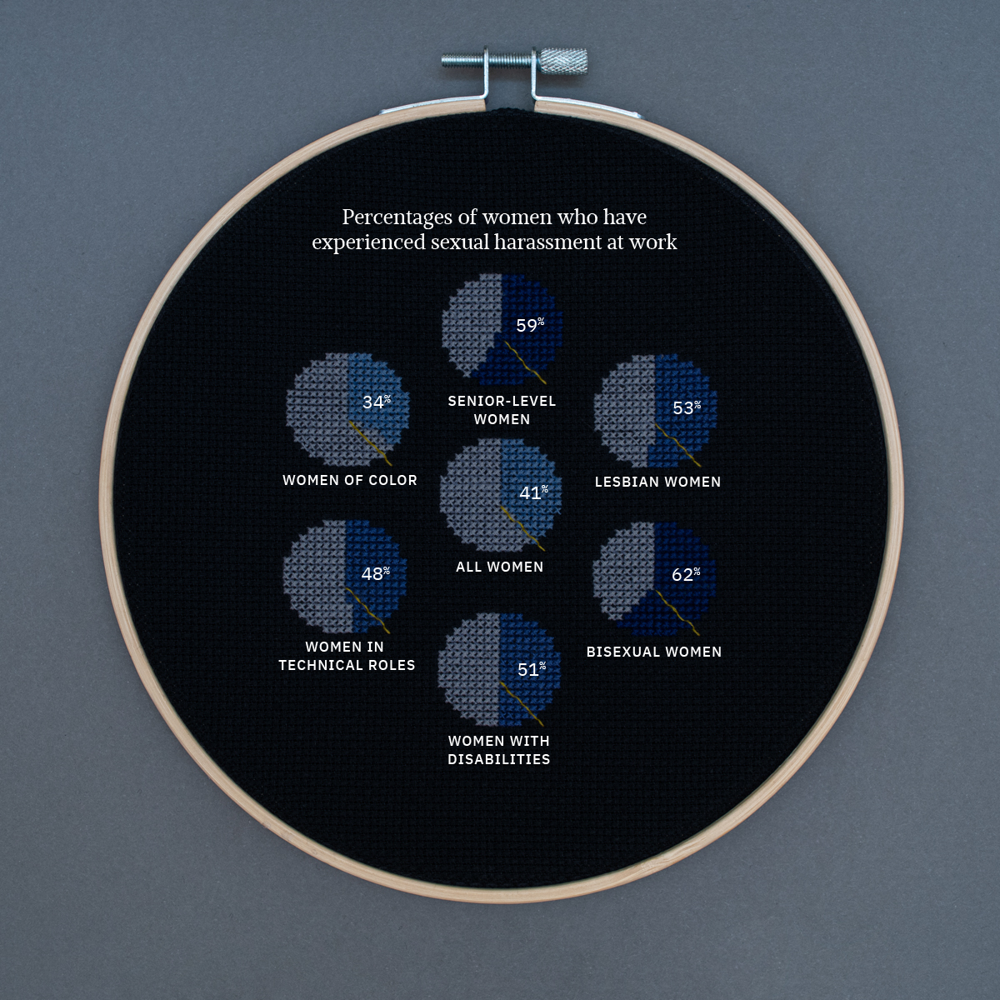
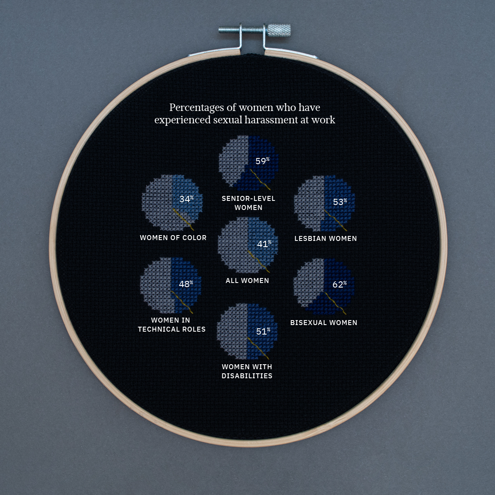
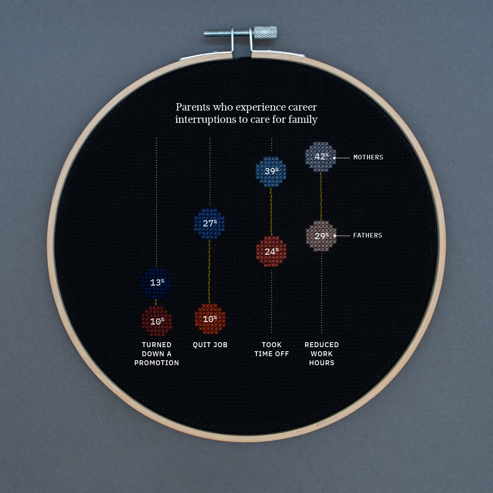
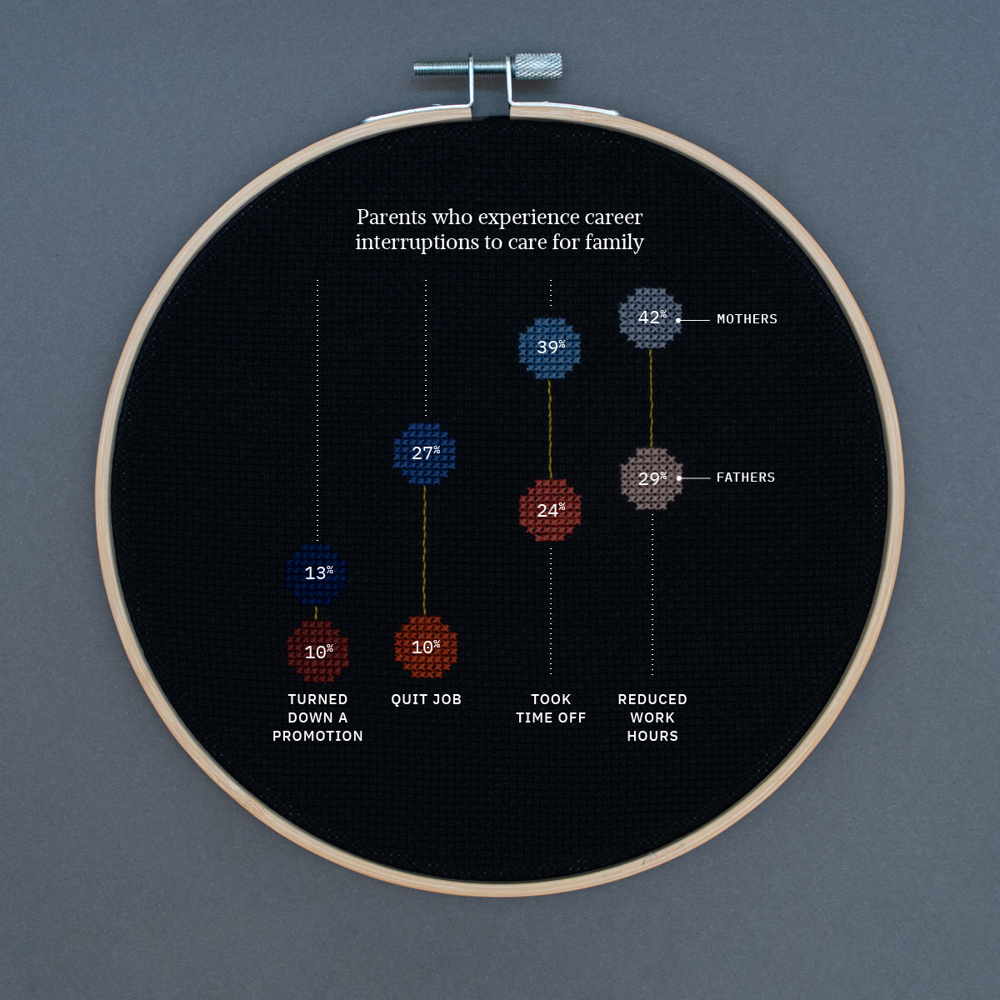
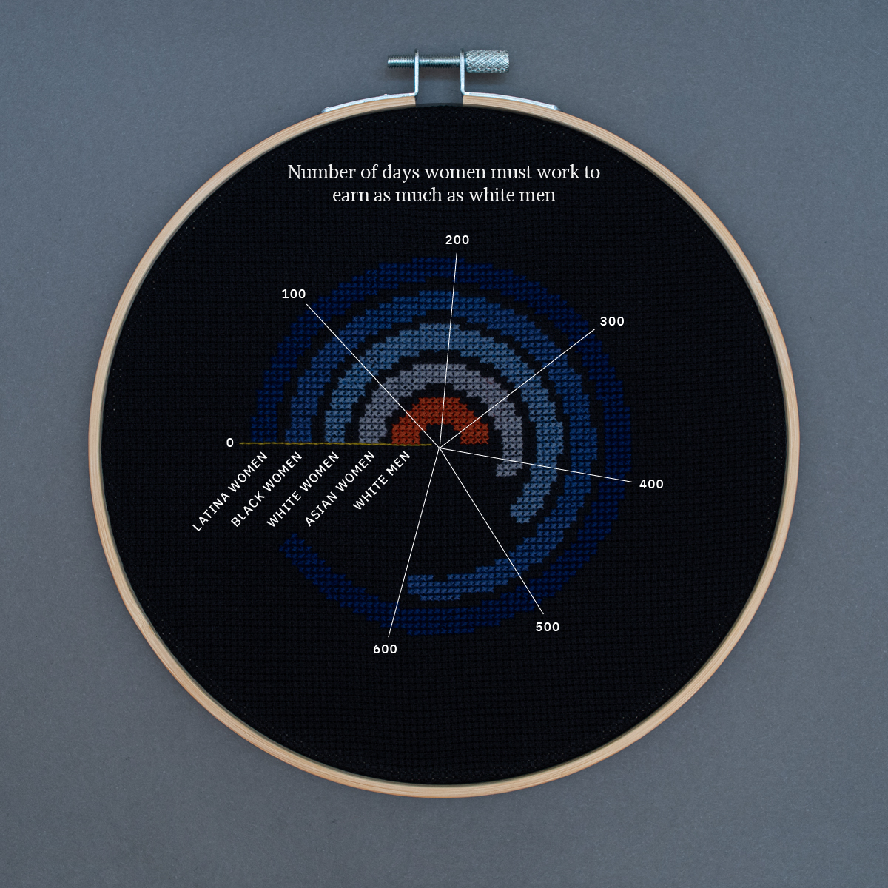

Fully employed women have more unpaid work and less leisure time than men.
Source: US Bureau of Labor Statistics

Having children greatly harms women’s earnings impact.
Source: NATIONAL BUREAU OF ECONOMIC RESEARCH
 

Queer women and women in leadship positions are likely to face sexual harassment at work.
Source: Women in the Workplace


Women face the highest pay gaps compared to men in Alabama, Louisiana, North Dakota, West Virginia and Wyoming.
Source: U.S. Census Bureau


Only 72 women on average, 68 Latina women and 58 black women get promoted for every 100 men.
Source: Women in the Workplace


Breadwinning mothers are far more likely to handle family tasks and responsibilities than breadwinning fathers.
Source: Businesswire

 

Women who work are much more likely to sacrifice their careers for family than men who work.
Source: Pew Research Center
On average, women make 68% of what white men make. Black women make 64% and Latina women make 54% of what white men make.
Source: Infoplease


The rate of women in the workforce peaked in 2000 at 60% and has been on a steady decline since.
Source: U.S. BUREAU OF LABOR STATISTICS


Women with bachelor’s degrees have outnumbered men since 1994. Women with masters degrees have outnumbered men since 2004.
Source: White House Council of Economic Advisers

To make the same as white men in one year, asian women need to work 407 days, white women need to work 465 days, black women need to work 591 days and latina women need to work 672 days.
Source: Business Insider
About the Project
All pieces in this series are for sale and 100% of proceeds will go to AAPF’s #SayHerName Campaign. Please reach out to olivia@o-j.co for any questions and inquiries.
Women’s Work was created by Olivia Johnson as a reaction to the discrimination that women, notably women of color, continue to face in the workforce. The medium of cross stitch, a form of art that tends to be labeled as kitsch and women’s hobby craft, was intentionally utilized to emphasize the fact that women’s labor is routinely dismissed and undervalued.